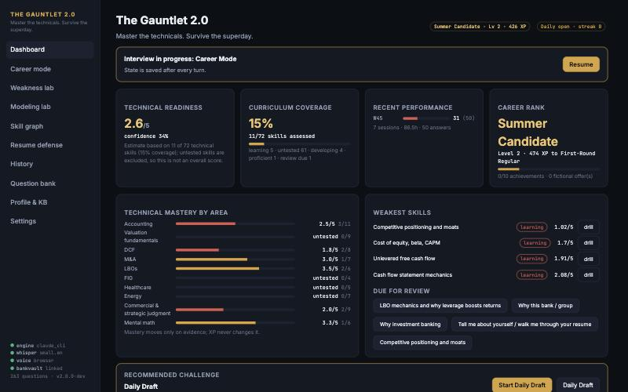
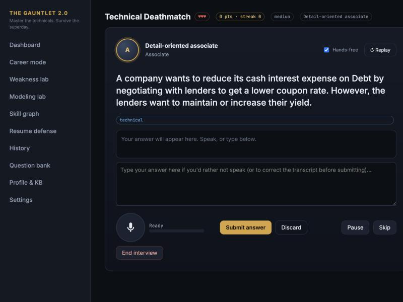
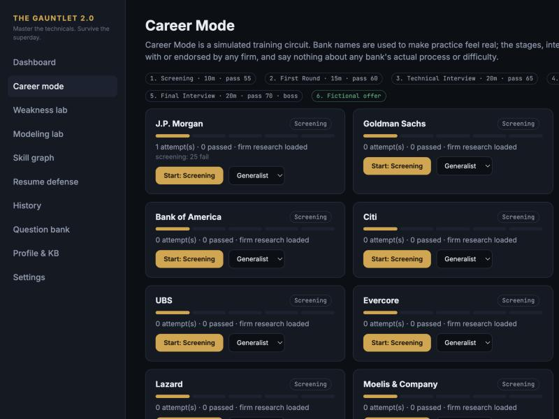
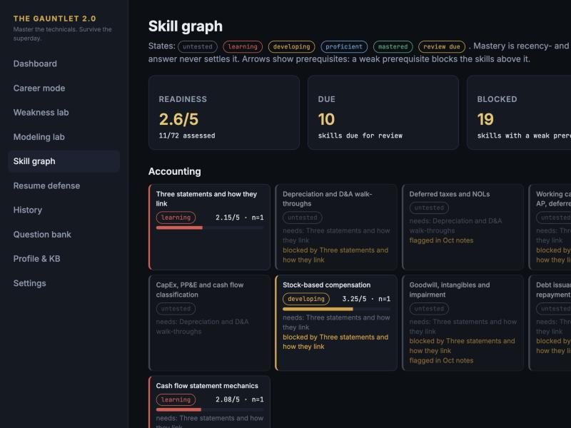
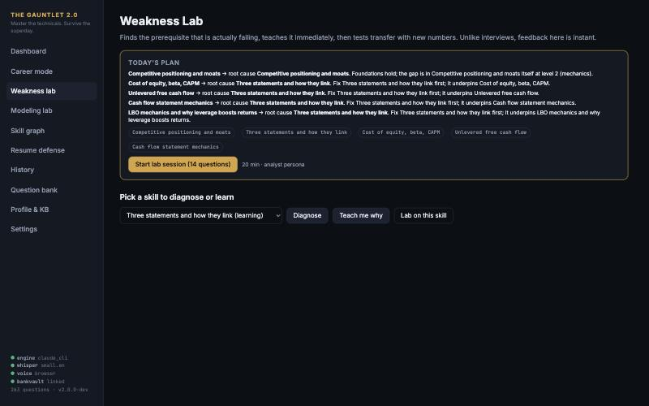
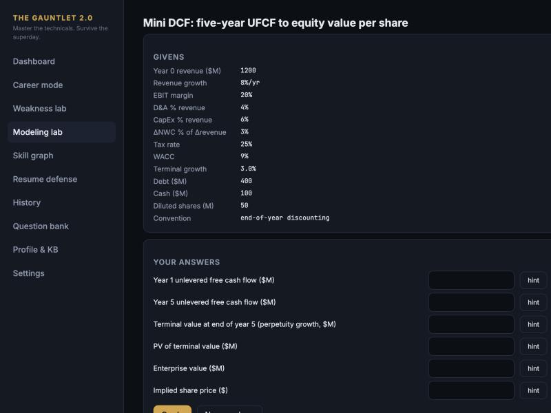

Master the technicals. Survive the superday.
A local-first, voice-enabled interview simulator that behaves like a skeptical banker: it listens, grades against structured rubrics, presses where the logic is weak, remembers what you said, and turns every session into evidence about what you actually understand.
Two layers answer every turn. A deterministic layer (rubric components, misconception patterns, verified arithmetic) grades instantly and chooses the next move. A model layer, when connected, refines the grade with quoted evidence and rephrases follow-ups in the interviewer's voice. Numbers always win; the model can never overrule a wrong calculation.
One question at a time. Sixteen reasons to challenge an answer, one chosen per turn. Level-up chains on good answers, prerequisite checks on bad ones, callbacks to earlier mistakes, contradiction detection across the session.
Reads your local copies of the M&I 400 and the Wall Street Prep Red Book, splits them into questions with section and page references, and maps each to a skill and a cognitive level. The guides never leave your machine.
States from untested to mastered, per-level tracking, spaced review, and a readiness figure that says "not enough data" until it has some. Repeating one question is worth a quarter of a fresh one.
Local Whisper transcription with a finance vocabulary, silence-based turn taking, hands-free mode, interruptions, and a transcript you can correct before it is graded.
Per question: what you got right, what you missed, the specific error, the source behind the explanation, a stronger answer, Teach-Me-Why, and a fresh reattempt on the same concept.
Career campaigns at real-named banks (fictional, disclaimed), three-life Deathmatch, Daily Draft, XP with farming decay, achievements gated on evidence. XP and mastery are independent.
Captured from a local build at 1440 px. Profile data shown is the developer's own placeholder state.






Python 3.9, FastAPI, SQLite (WAL). Knowledge, interview, evaluation, mastery, career and game engines as modules in one process. Persistent Claude CLI workers over stream-json for 2–4 second turns; deterministic fallback when no model is available.
Vanilla JavaScript single-page app, no build step. MediaRecorder plus a local Whisper server for speech, browser or macOS voices for the interviewer.
FastAPISQLitefaster-whisperClaude CLIpydanticpytest · 65 testssimulated-candidate harness
The app is personal by design: it reads your resume facts from a private, gitignored file and your interview guides from your own disk. The public repository ships a placeholder profile and no guide content.
git clone https://github.com/joshlammbo0/the-gauntlet.git gauntlet && cd gauntlet uv venv --python /usr/bin/python3 --system-site-packages .venv uv pip install --python .venv/bin/python fastapi "uvicorn[standard]" pydantic python-multipart httpx pytest pyyaml pip3 install --user faster-whisper # local speech-to-text (macOS) cp app/profile/facts_private.example.py app/profile/facts_private.py # then fill in YOUR facts .venv/bin/python app/knowledge/ingest.py # optional: index your own M&I 400 / Red Book PDFs .venv/bin/python -m app # http://127.0.0.1:8870
claude auth login once (Claude Code binary) or put ANTHROPIC_API_KEY in .env. Without it the engine is fully deterministic. Guide excerpts are sent to the model only when the disclosed setting is on.